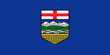
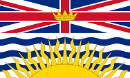
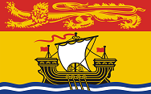
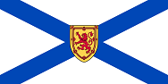
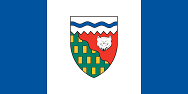
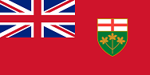
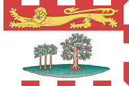
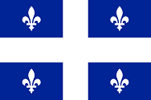
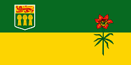

Canadian Provinces and Territories
 Canada
Canada 
Alberta is Canada's fourth-most populous province and most populous of Canada's three prairie provinces. Alberta and its neighbour, Saskatchewan, were established...
Read more 
British Columbia is also a component of the Pacific Northwest, along with the U.S. states of Oregon and Washington. The province's name was chosen by Queen...
Read more
Manitoba is a Canadian prairie province. The province, with an area of 649,950 square kilometres (250,900 sq mi), has a largely continental climate, with...
Read more 
New Brunswick is one of Canada's three Maritime provinces and is the only province in the Canadian federation that is constitutionally bilingual...
Read more
Newfoundland and Labrador is the most easterly province of Canada. Situated in the country's Atlantic region, it incorporates the island of Newfoundland...
Read more 
Nova Scotia is one of Canada's three Maritime provinces and constitutes one of the four Atlantic Canada provinces. Located almost exactly halfway between...
Read more 
The Northwest Territories is a territory of Canada. With a population of 43,537 in 2013, the Northwest Territories is the most populous territory in Northern...
Read moreNunavut is the largest, northernmost and newest territory of Canada. It was separated officially from the Northwest Territories on April 1, 1999, via the Nunavut...
Read more 
Ontario is one of the ten provinces of Canada, located in east-central Canada. It is Canada's most populous province by a large margin, accounting for nearly...
Read more 
Prince Edward Island (PEI or P.E.I.) is a Canadian province consisting of the main island itself, as well as other islands. It is one of the three Maritime ...
Read more 
Quebec is a province in east-central Canada. It is the only Canadian province that has a predominantly French-speaking population, and the only one to have...
Read more 
Saskatchewan (Listeni/səˈskætʃəwən/ or /səˈskætʃəˌwɑːn/) is a prairie province in Canada, which has a total area of 651,900 square kilometres (251,700 sq mi) and...
Read more
Yukon is the westernmost and smallest of Canada's three federal territories. Whitehorse is the territorial capital and Yukon's only city. The territory was split from...
Read more